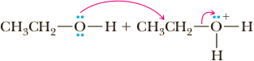

Preparation of Ethers
The most common general method for the synthesis of ethers, the Williamson ether synthesis, involves nucleophilic displacement of a halide ion or other good leaving group by an alkoxide ion.
+ CH3I (Iodomethane - Methyl iodide)
SN2
⟶
+ Na+I−
In planning a Williamson ether synthesis, it is essential to use a combination of reactants that maximizes nucleophilic substitution and minimizes any competing β-elimination (E2, Section 9.6B). Yields of ether are highest when the halide to be displaced is on a methyl or a primary carbon. Yields are low in the displacement from secondary halides (because of competing β-elimination), and the Williamson ether synthesis fails altogether with tertiary halides (because β-elimination by an E2 mechanism is the exclusive reaction). For example, tert-butyl methyl ether can be prepared by the reaction of potassium tert-butoxide and bromomethane. Note that bromomethane is the only haloalkane with little enough steric hindrance to react with the highly hindered potassium tert-butoxide. Even primary haloalkanes would not react to give a high yield of the corresponding tert-butyl ether.
+ CH3Br (Bromoomethane - Methyl bromide)
SN2
⟶
+ K+Br−
With the alternative combination of sodium methoxide and 2-bromo-2-methyl-propane, no ether is formed; 2-methylpropene, formed by dehydrohalogenation, is the only product.

+ CH3O−Na+ (Sodium methoxide)
E2
⟶

+ CH3OH + K+Br−
Acid-Catalyzed Dehydration of Alcohols
Diethyl ether and several other commercially available ethers are synthesized on an industrial scale by the acid-catalyzed dehydration of primary alcohols. Intermolecular dehydration of ethanol for example, gives diethyl ether.
| 2 CH3CH2 OH Ethanol | H2SO4 ⟶ 140°C | CH3CH2OCH2CH3 Diethyl ether | + H2O |
Mechanism Acid-Catalyzed Intermolecular Dehydration of a Primary Alcohol
Step 1: Add a proton. Proton transfer from the acid catalyst to the hydroxyl group gives an oxonium ion, which converts −OH, a poor leaving group, into −OH2, a better leaving group.
| CH3CH2—O—H | + H2SO4 | fast and reversible ⇌ | CH3CH2—OH+—H | + HSO4− |
Step 2: Make a new bond between a nucleophile and an electrophile and simultaneously break a bond to give stable molecules or ions. Nucleophilic displacement of H2O by the OH group of a second alcohol molecule gives a new oxonium ion.
|  | SN2 ⟶ | CH3CH2O+HCH2CH3 A new oxonium ion | + H2O |
Step 3: Take a proton away. Proton transfer from the new oxonium ion to H2O completes the reaction.
| CH3CH2O+HCH2CH3 | + H2O | Proton transfer ⇌ | CH3CH2OCH2CH3 | + H3O+ |
Note that the acid is a catalyst in this reaction. One proton is used in Step 1 but another is generated in Step 3.
Yields of ethers from the acid-catalyzed intermolecular dehydration of alcohols are highest for symmetrical ethers formed from unbranched primary alcohols. Examples of symmetrical ethers formed in good yield by this method are dimethyl ether, diethyl ether, and dibutyl ether. From secondary alcohols, yields of etherare lower because of competition from acid-catalyzed dehydration (Section 10.6). In the case of tertiary alcohols, dehydration to an alkene is the only reaction.
Acid-Catalyzed Addition of Alcohols to Alkenes
Under suitable conditions, alcohols can be added to the carbon-carbon double bond of an alkene to give an ether. The usefulness of this method of ether synthesis is limited to the interaction of alkenes that form stable carbocations and methanol or primary alcohols. An example is the commercial synthesis of tert-butyl methyl ether (MTBE). 2-Methylpropene and methanol are passed over an acid catalyst to give the ether.
| 2-Methylpropene | + CH3OH | Acid catalyst ⟶ | 2-Methoxy-2-methylpropane (tert -Butyl methyl ether) |
Mechanism Acid-Catalyzed Addition of an Alcohol to an Alkene
Step 1: Make a new bond between a π bond and an electrophile—add a proton. Proton transfer from the acid catalyst to the alkene gives a carbocation intermediate.
 | slow, rate determining ⇌ | CH3C+HCH3 A 2° carbocation intermediate | + H2O |
Step 2: Make a new bond between a nucleophile and an electrophile. Reaction of the carbocation intermediate (an electrophile and a Lewis acid) with the alcohol (a nucleophile and a Lewis base) gives an oxonium ion.
| CH3C+HCH3 | + HOCH3 | fast ⇌ |  |
Step 3: Take a proton away. Proton transfer to solvent (in this case methanol) completes the reaction.
| CH3—OH | + CH3—HO+—C(CH3)3—OH | ⇌ | CH3—O+H2 | + (CH3)3C—O—CH3 |
At one time MTBE was added to gasoline under a mandate from the Environmental Protection Agency to add “oxygenates,” which make gasoline burn more smoothly (it raises the octane number) and lower exhaust emissions. As an octane-improving additive, MTBE is superior to ethanol (the additive in ethanol blend fuels such as E10 and E85). A blend of 15% MTBE with gasoline improves octane rating by approximately 5 units. Unfortunately, because MTBE is much more soluble in water than gasoline, it has gotten into the water table in many places, in some cases because of leaky gas station storage tanks. It has been detected in lakes, reservoirs, and water supplies, in some cases at concentrations that exceed limits for both “taste and odor” and human health. Consequently, its use as a gasoline additive is being phased out.